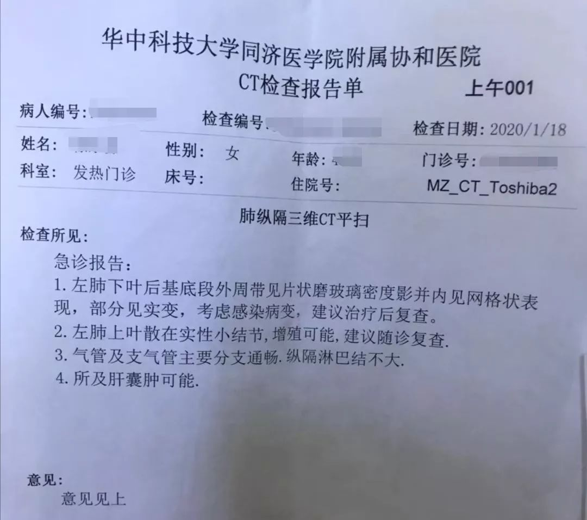
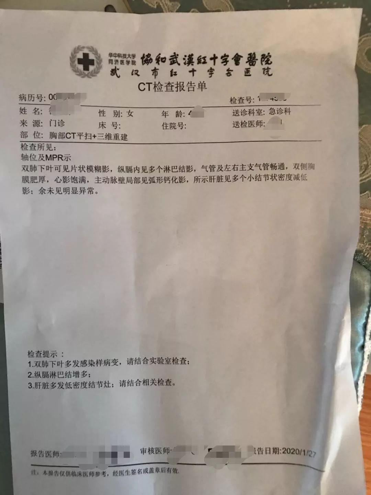
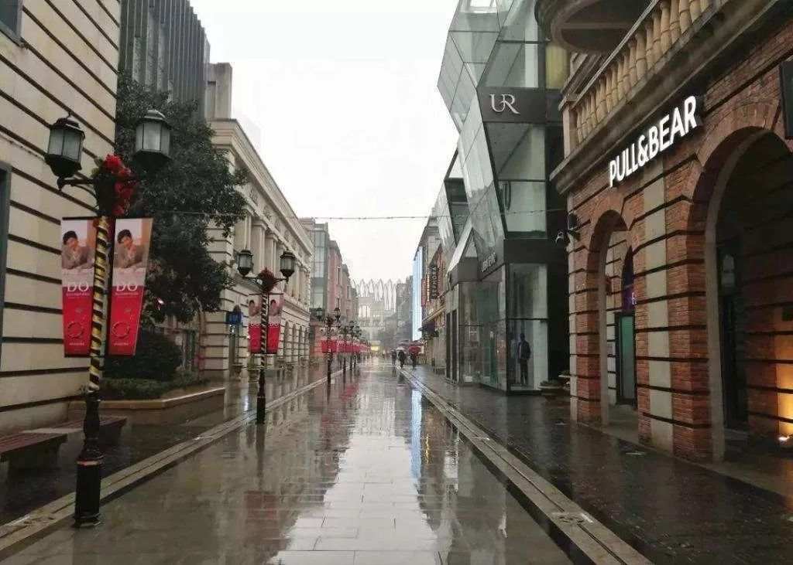

湖北告急岂止武汉：各地执业医师不到1万，武汉3.8万
原文链接 备份链接 如何避免成为第二个武汉 是当前抗疫中湖北其他城市的共同命题1月29日，武警湖北总队黄冈支队官兵为担负隔离任务的大别山区域医疗中心抢运物资。图/新华 岂止武汉：湖北疫情告急 *本刊记者/**徐天 鲍安琪 霍思伊* 发 …

我很清楚地感受到，自己成长的速度跟不上家庭在危机中前进的节奏，我开始重新审视自己在家庭中所扮演的角色。我觉得我应该成为连接父母和世界的一座桥梁。
文| 孟予 编辑| 小豆 版式| 陈星萌
22岁的李湘明一直在武汉生活，2019年大学毕业后，她在武汉江岸区后湖附近一家财会公司工作。从未离开过父母的她，生活上几乎不用操心。
2019年的跨年夜，李湘明还和朋友来到江汉路的步行街聚会。那天，她第一次听说“不明原因肺炎”。那时并没有消息说，这个病毒可以“人传人”。直到2020年1月18号，一家人一起发烧后的第十天，父母再次发烧，李湘明开始慌了。她开始陪着父母去打针，凌晨2点出发去医院排队，次日下午5点才能回家。
之后，母亲的病情一步步加重，却一直无法做核酸检测，也无法住院。而网上关于肺炎的消息越来越多，李湘明的心也越来越乱。终于在1月28日，母亲去做了核酸检测，几天后获知是阴性。李湘明悬着的心总算放下了。这一个月来，李湘明在手足无措中被迫成长。

以下是李湘明的口述：
一
全家发烧，辗转多院
1月8日，平常几乎不生病的爸爸发烧了。我开车带他到离家最近的武昌医院，打了一针消炎药，他好了，但是随后的两天，我和母亲也陆续开始反复发低烧。我们同样来到武昌医院打针，退了烧。
我曾在12月31日和爸妈提过，在微博里看到武汉出现了“不明原因肺炎”，但是具体是什么病，什么症状，是否传染都一概不知。因此，也没有多想，没有做任何防护。
1月17日，爸爸再次发烧，他在武汉人民医院开了点药。我觉得有点不对劲，开始隐隐地担心，是不是肺炎？次日，我妈妈也发烧了，还开始咳嗽。这个时候正值新闻对新型冠状病毒的报道增多，不知道是不是心理作用，我也觉得嗓子不太舒服。于是决定一家三口去华中科技大学同济医学院附属协和医院（以下简称协和医院）拍胸部CT。
我的肺部显示正常，父母的CT检查单则说，“考虑感染病变”。母亲的片子里显示，左肺有一点感染，那时候我还没往这方面想，我更担心的是，会不会演变成肺癌，因为母亲本身体质就不好。

（受访者供图）
当晚，我把母亲的片子发给一位在武汉市黄陂区一家医院的放射科上班的朋友，请他帮忙看看。他告诉我，这个情况主要考虑感染病变的肺炎，但是也没有提到新型冠状病毒。
从这时起，医院的人逐日增多。每天凌晨，我陪爸妈一起去协和医院打针。排队的人特别多，要到第二天下午5点才能回家。因为我爸妈病了，所以我让他们去旁边坐着，我一个人站着排队。长时间不吃不喝，又打乱了作息，大家真的都很累，但是有什么办法。我放眼望去，大家都是很疲惫的样子，有的人就直接坐在地下了。
我陪着爸妈在协和医院打了三天针，父亲完全好了，能吃能喝，但是母亲还没好转，依然在咳嗽。1月21日，母亲在协和医院做了第二次胸部CT，片子显示右肺也有一部分被感染了。医生口头上告诉我，看片子的结果，多半是病毒性肺炎，至于是否是新型冠状病毒，还有待检测，现在这样的情况最好住院，但是医院现在没有病床，所以先自己回家隔离。

（受访者供图）
1月23日，协和医院将发热门诊的一些病人转移到武汉市红十字会医院。次日，我说自己有点呼吸困难，我妈急死了，很担心我被感染，一直催我去检查。
最后显示没有感染病毒，但是我妈不许我跟着她去打针了，那天全家都很着急，我想去给我妈争取一个病床，一来妈妈身体一直很虚弱，常年小手术不断，2019年8月还做了两次大手术。我担心她挺不过去，每天这样跑来跑去、排队打针，太折磨人了。二来我怕他们听到医生说什么，就真的认为是什么。
我妈越说越急，她都要哭了，最后说，如果今天我也跟着去医院，那这个病她就不治了，就在家等着。我们全家沉默了足足有三分钟吧，最后我妥协了，放他们走了。
也是在这一天，武汉宣布封城了。虽然是为了控制疫情，但我真的好难过，为什么武汉变成这样了？
接下来的每一天，我就在家里做消毒，在网上查很多相关信息。我按照同济治愈医生的自述给我妈做吃的。其实也不是我做，我不会做饭。我还冒着风险点了鸡汤的外卖，看了那家外卖那几天的评论，一直有人买，我就也买了，等我妈打针回来就给她喝。我白天在家，切好菜、做些家务，蒸一碗鸡蛋羹，等我爸妈回来。
二
苦等检测，网络求助
1月25日，妈妈咳嗽还未好转，感觉肺部烧得慌，她又去红十字会医院检查，结果显示双肺全部感染。我真的急疯了，我迫切地想知道，到底是不是新型冠状病毒感染。但是我妈去过的每一家医院，包括武昌医院、武汉人民医院、协和医院和武汉市红十字会医院，都说自己没有权限做试剂盒检测。

（受访者供图）
我问他们怎样才能有权限？医生说需要专家申请。但是他们既不知道专家在哪，也不知道怎么找专家。网上有传闻说试剂盒不够，我就问，是不是试剂盒不够，他说不是，就是需要有专家申请，才能做测试。想要住院，医院也说没有病床。
我实在不知道该怎么办，当天发了两条微博求助。后来就有微博的工作人员说帮我认证，我就给了对方资料，认证后引起了很多关注。网友告诉我，还有很多医院，我就给一医院、五医院、七医院、汉口医院、肺科医院、人民医院的东院这6家医院打电话，询问能否做核酸测试，都说不行。
还有网友提到，可以先去社区卫生服务中心治疗。我立刻从网上找到号码，联系了社区，社区工作人员做了信息登记，告诉我最快明天会有反馈。但是具体能不能做核酸检测，他也没给我一个明确的答案。
在社区登记以后，每天都有工作人员来询问情况。我之前完全不知道这件事，我想，像我爸妈那个年纪的人，他们怎么能接收到这么多信息呢？我觉得宣传太不到位了。包括武汉禁行后，是可以联系社区要车用的。这些信息如果不是我看到了，很可能等他们知道的时候已经很晚了，就会耽误病情。
我印象中最深刻的一幕，是在武昌医院里给我妈联系病床的时候。当时我拿到了住院单，护士登记之后，说要去找急诊科的主任签字，她抬手指了一个方向，我找了半小时也没找到人。然后就又问了个医生，医生说可以直接去登记，有床位的话会通知的。我又去找护士，护士说，只能去找主任签字。我就这样被推来推去，不知所措的时候，看到旁边一对互相搀扶着的老爷爷老奶奶。他们佝偻着身体，走路很慢，也是跟我们一样情况。他们两个最后直接把住院单撕了，说不看了，就直接走了。
我真的很难受，我在想，像他们这样的，又该怎么办呢？可我现在自顾不暇，现在应该有很多人跟我们一样，不知道怎么办吧。

（小区放国歌，居民们大喊“武汉加油”，图源微博）
27号晚上，我们家小区自发地在阳台唱国歌，很多人喊，武汉加油。那一刻我心里又苦涩，又感动，我也走出去喊了几句。我想，如果我们团结一致，一定可以渡过难关。
三
虚惊一场，反省成长
1月28日，我妈妈接到协和医院打来的电话，说可以去做核酸检测。随后，社区也打来电话，说今天确定登记的话，明天可以去武昌医院做核酸检测。我觉得有点矛盾，27号我自己在武昌医院问，他们的答复是没有权限。但是我没有时间考虑，为了尽快知道消息，我在社区登记了爸爸的名字，然后让妈妈今天赶紧去协和医院做测试。
妈妈做完检测后，协和医院说可以预约明天的检测，就顺便在协和给父亲约了，大医院做检查会更放心。之后，医生告诉我妈妈，如果晚上没有接到电话，就说明没事。过了好几天，我妈妈收到短信，说结果是阴性。她戴着口罩，走到客厅里，告诉我们这个消息。我蛮庆幸的，提着的一颗心总算放下了。
因为父亲第一次打针后，症状全无，看起来已经恢复如常了，所以我不太担心父亲，而母亲的核酸测试已经有结果了，整个人从紧绷的状态中缓和了一些。但是检测还是要做的，目前还在等待父亲的检测结果。
我没有立即把确诊消息发在微博里，不是不愿意分享好消息，而是社交媒体上的阅读太多，稍有不慎就会引发恐慌。现在每天都有很多人私信我，我每一条都认真看了。有的人是过度恐慌的，说Ta的体温现在37度了，是不是感染了，该怎么办。也有人是和我一样，拖了很多天无法确诊、住院的。
老实说，我也只是一个求助者，能做的只有安慰他们，再分享我这些天所了解的“干货”，比如同济治愈医生的那篇文章。但是后来总有人问，我就在结果出来的第二天发了微博。
活了22年，这是我人生中最难熬的一个月。第一次遇到这么大的事，我不敢在父母面前哭，不想让他们担心，就晚上自己躲在被子里哭。以前我每晚10点准时睡觉，但是这段时间我经常失眠，已经开始服用安神药。其实我爸妈每次凌晨出门去医院的时候，我都是醒着的。我会立刻下床，戴上口罩走到客厅，跟他们强调一遍，一定要戴上我买的医用外科口罩，否则在那里很容易交叉感染。
我也知道，我妈其实只是没对我说而已，她可能更慌乱，更不知道怎么办。有一次，我发现她手机的搜索记录里，全部都是新型冠状病毒相关的内容。我们都只是不想让对方担心。
这一次，我很清楚地感受到，自己成长的速度跟不上家庭在危机中前进的节奏。成长都是被逼出来的，我开始重新审视自己在家庭中所扮演的角色。
以后，我要学习做家务和做菜，总不能像这次一样，我妈生病了，戴着口罩还要给我烧菜。还要督促我爸妈锻炼身体。只有免疫力强，才不会轻易被病毒打倒。
再有，我觉得我应该成为连接父母和世界的一座桥梁。他们年纪大了，不怎么上网，微信是使用最多的手机软件。现在已经是网络社会了，信息爆炸的状态下，如果不主动去搜集信息，很难了解到最新的情况。27号武汉开始实行社区分级分类诊疗，如果不是网友在私信和评论里告诉我，我也完全不知道，原来社区还可以登记，还可以安排就诊。
我觉得这次微博求助多少发挥了点作用，至少更快速地从各路网友那里听到更多的新情况。其实以前我自己都不怎么玩微博，但现在给妈妈也下载了微博，我帮她关注了几个健康科普类的博主，没事时总可以看到几眼消息。
以后如果我知道了什么新消息，我一定会当面详细讲给他们听，而不是像以前一样甩个链接或者发消息到我们三个人的群里，他们是否点开仔细看了，我都不能确定。
现在我迫切期盼着疫情结束，我从未见过这样的武汉，街道上空空荡荡，入眼的全是戴着口罩的人。

如果疫情结束了，我最想做的事情是带着父母出去转转。他们从来没有离开过武汉这座城市，我想陪他们一起，再去看看这个美丽的大世界。
（应被采访者要求，李湘明为化名。）

小南征集：疫情过后你最想做的一件事是什么？
许多计划由于这场疫情被拖滞在寒冬，在家的这段日子，我们关注着每天的疫情，期待着每天醒来之后能刷到好消息，希望能够早日走出门去，完成自己这段时间心心念念最想做的事。
疫情过后你最想做的事是什么？是大口吃肉？还是立马见到那个人？又或是想明白了一些事情，想在之后改变一些什么？
戳链接↓↓
http://ccc20200206.mikecrm.com/iYjgCwz
说说你春天的愿望吧，我们将精选留言在“南都周刊”的微博和公众号上推送，让我们一起盼春来！
来源｜南都周刊
END
欢迎分享到朋友圈，如想取得授权请邮件：newmedia@nbweekly.com。如果想找到小南，可以在后台回复「小南」试试看哦~

文章已于修改
原文链接 备份链接 如何避免成为第二个武汉 是当前抗疫中湖北其他城市的共同命题1月29日，武警湖北总队黄冈支队官兵为担负隔离任务的大别山区域医疗中心抢运物资。图/新华 岂止武汉：湖北疫情告急 *本刊记者/**徐天 鲍安琪 霍思伊* 发 …
原文链接 备份链接 来源：雪球App，作者： 八点健闻，（https://xueqiu.com/1553077980/140215390） 岳父发烧9天 ，妻子发烧6天 ，CT报告都显示“双肺严重感染” ，却一直没能得到检测 ，确认是不是 …
原文链接 备份链接 湖北省人民医院PCR实验室。 本文约4483字 预计阅读时间12分钟 作者 秦珍子 编辑 从玉华 邱辰的假期变成了一次征途。 最近1个月，他把近8万人份的试剂盒带进交通封锁的湖北，也带进一度封闭的市场。 春节前后，湖 …
原文链接 备份链接 蔡婷说：“大家都荒谬到这个程度了。” 2月5日下午，湖北省人民医院拥挤的门诊部，蔡婷排了3个小时的队。这家医院昨天做了1500份新型冠状病毒的核酸检测，43岁的蔡婷和母亲的样本，也在其中。现在，蔡婷全部心思都在这上面， …
原文链接 备份链接 06.02.2020本文字数：4302，阅读时长大约7.5分钟 导读：一周时间，武汉新增病例5.5倍增长，累计病例增长3.69倍。 作者 | 第一财经 马晓华 胥会云 武汉封城之后，湖北以外的各省份对新型肺炎展开了“ …